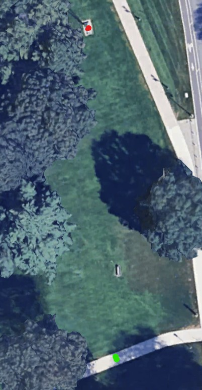

Stats
Par: 3
Distance: 217 ft
Hole Description
Starting on the path near the tree from the last hole, this hole is a straight shot to the flag pole, any white part of the flag pole counts, the base does not.
Map key: green dot starting box, red dot target, blue dot mandatory.